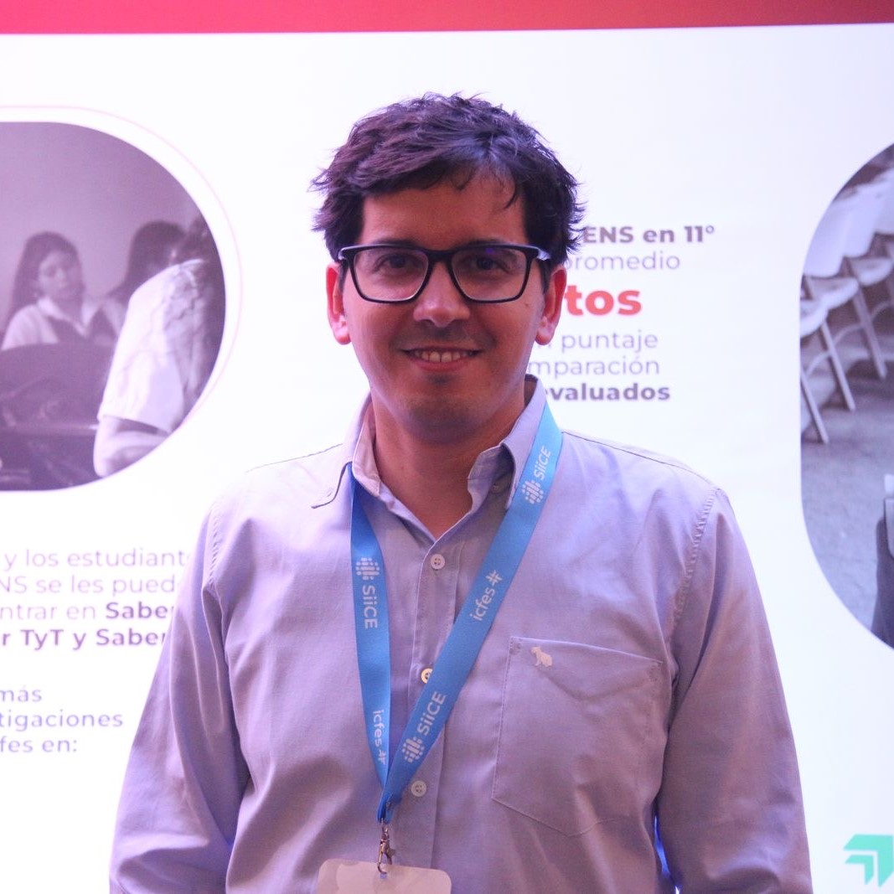
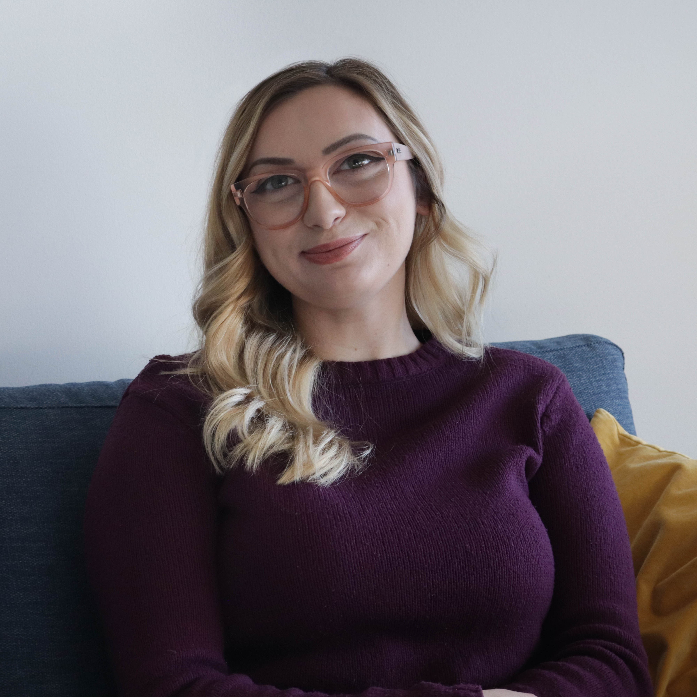
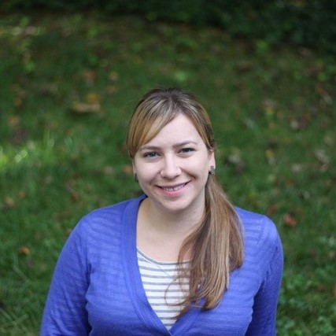

Workshops
Personal R Administration
Description
- Does the release of a new R version fill you with dread?
- Are there passwords in your R code?
- Do you look at the output of a failed package installation and think to yourself, “WTF?!”
If you said yes to any of those questions, then you need Personal R Administration. You’ll come away with tips, tricks, tweaks, and some hacks for building data science dev environments that you won’t be afraid to come back to in a year.
David Aja and Shannon Pileggi
E. David Aja is a Software Engineer at Posit. Before joining Posit, he worked as a data scientist in the public sector.
Shannon Pileggi (she/her) is a Lead Data Scientist at The Prostate Cancer Clinical Trials Consortium, a frequent blogger, and a member of the R-Ladies Global leadership team. She enjoys automating data wrangling and data outputs, and making both data insights and learning new material digestible.
teal Mastery: From Pre-built Modules to Custom Module Creation
Description
This session provides a comprehensive introduction to teal programming, starting with creating a simple teal application from scratch. You’ll learn the fundamentals of building a basic teal app and understand its core components. Next, we will explore the practical use of pre-built modules from teal.modules.general and teal.modules.clinical, demonstrating how these ready-to-use components can streamline the development of robust teal applications. Participants will gain hands-on experience in integrating these modules into their projects. The workshop will then focus on building upon this foundation by learning how to create custom teal modules that meet specific project needs. You’ll learn how to leverage the core features of the teal framework to develop tailored solutions and take your skills to the next level. This session will provide practical insights and coding examples, empowering you to extend and customize your teal applications beyond the capabilities of pre-built modules. By the end of this workshop, you will have a comprehensive understanding of both pre-built and custom module development in teal, making it an ideal choice for beginners and intermediate learners looking to expand their R skills with teal.
Dony Unardi
Dony Unardi is a Principal Data Scientist at Genentech, and the Engineering Team Lead in the development effort of an open-source R product called teal, a Shiny-based R package focused on interactive and reproducible data analysis and visualization in clinical trials.
Survival analysis with tidymodels
Description
Survival analysis is now supported across the tidymodels framework, a collection of R packages for modeling and machine learning using tidyverse principles. It covers the entire predictive modeling workflow from data splitting, resampling, feature engineering, model fitting, and performance evaluation to tuning. It provides a consistent interface with composable functions that allow beginners a safe start and advanced users access to more specialized techniques such as feature engineering on text data or tuning via racing methods. The addition of dedicated performance metrics has enabled us to support tuning of survival models and unlock the entire framework for survival analysis. This workshop focuses on the core components of tidymodels to get you up and running with predictive survival analysis.
This workshop is for you if you
- are familiar with basic survival analysis such as censoring of time-to-event data, Kaplan-Meier curves, proportional hazards models
- are familiar with the basic predictive modeling workflow such as split in train and test set, resampling, tuning via grid search
- want to learn how to leverage the tidymodels framework for survival analysis
Hannah Frick
Hannah Frick is a software engineer on the tidymodels team at Posit. She holds a PhD in statistics and has worked in interdisciplinary research and data science consultancy. She is a co-founder of R-Ladies Global.
“Visualise, Optimise, Parameterise!” - Writing dataviz code that your future self will thank you for
Description
You’ve collected the initial data, explored the patterns and settled on a few graphs you’ll want to create now and in the future as you revisit the dataset from different angles and with new data as it comes in. How can you make sure that the graphs will be as memorable as possible, while also making life easier for your future self?
In this code-along workshop, we’ll work together on our datasets to:
- Settle on the right types of graphs and find colours, fonts and additional styling which complement our storytelling
- Apply these colours, fonts and additional styling to the graphs by creating reusable functions and vectors, avoiding all the copy-pasting we’d end up doing otherwise
- Add annotations straight from the data to highlight patterns and points of interest
- Make the graphs interactive (because why not?)
- Adapt our code to create a function with parameters, which will allow us to apply the same plotting function to any number of future datasets, with a few extra options.
To get the most out of our workshop, I encourage you to bring a long a dataset and a basic graph (built with ggplot) that you’ve been working on for it. That should allow you to leave the workshop having made good progress towards a finished publishable product! If you don’t have a dataset you can use, don’t worry, I’ll provide one.
Cara Thompson

Cara is a data visualisation consultant with an academic background, specialising in helping research teams and data-driven organisations turn their data insights into to clear and compelling visualisations.
Following her PhD in Psychology and a spell teaching research methods at Edinburgh Uni, she embarked on a career in psychometrics at the Royal college of Surgeons of Edinburgh. After ten years of helping surgeons and other medical professionals understand complex patterns in exam data, she set out as an independent data visualisation consultant and launched her business “Building Stories with Data”, to continue crafting innovative dataviz solutions for a range of different organisations.
She lives in Edinburgh, Scotland, with her husband and two young daughters. Cara regularly shares coding tips for dataviz online, and genuinely enjoys helping others level up their dataviz skills through talks, bespoke toolkits, organisational training, and one-to-one coaching.
Promover la Equidad Científica: Una Introducción al uso de R para la programación en Bioestadística y Ciencia de Datos, en Español.
Descripción
A pesar de los abundantes recursos disponibles para aprender R, la mayoría de estos materiales son accesibles principalmente para angloparlantes. Esta barrera del idioma restringe significativamente el acceso de personas que no hablan inglés con fluidez. Como resultado, las comunidades de habla hispana a menudo enfrentan desafíos considerables para acceder a oportunidades de capacitación en software. Esta disparidad conduce a desigualdades en la distribución y utilización de las tecnologías científicas, lo que es particularmente preocupante dada la creciente importancia de las habilidades digitales en la actualidad. Para mitigar estos desafíos y promover la inclusión, proponemos realizar un taller de programación en español durante la conferencia. Esta iniciativa tiene como objetivo cerrar la brecha brindando a los participantes de habla hispana igualdad de oportunidades para interactuar y beneficiarse de los avances tecnológicos. Al hacerlo, no sólo mejoramos las capacidades individuales sino que también contribuimos a una distribución más equitativa de los recursos educativos en la comunidad científica. Este taller equipará a los asistentes con habilidades básicas en R. Nuestro objetivo principal es familiarizar a los participantes con RStudio y sus características clave para generar informes reproducibles. Guiaremos a los asistentes a través del proceso de creación y gestión de proyectos en RStudio y les presentaremos la creación de manuscritos reproducibles utilizando documentos Quarto. El taller utilizará un conjunto de datos disponible públicamente de los CDC, que contiene información sobre el uso de drogas y la ideación suicida entre adolescentes, como un ejemplo práctico del uso de R para la investigación académica en salud pública. Explicaremos cómo utilizar funciones como filtrar, mutar, resumir y seleccionar del conjunto de paquetes tidyverse. Concluiremos demostrando cómo usar ggplot2 para crear visualizaciones en R. Al final del taller, los participantes habrán creado un documento reproducible en formato HTML, detallando los pasos de limpieza de datos y el análisis de un problema social contemporáneo importante. Esta presentación tiene como objetivo cerrar la brecha en la alfabetización en programación entre los investigadores de habla hispana y promover métodos para la investigación científica reproducible.
Catalina Canizares-Escobar and Francisco Cardozo
Catalina Cañizares es una científica de datos apasionada y candidata Ph.D. en trabajo social. Ella se dedidca al uso de datos para obtener información sobre los trastornos emocionales. Ha estado profundizando en el análisis de datos, especialmente con R y su enfoque es hacer que los datos sean comprensibles y útiles. Se especializo en limpiar y fusionar datos, y le encanta explorar datos con herramientas como tidyverse, table1, gtsummary y skimr, entre otras. También se interesa utilizar modelos de Machine Learning, con el paquete tidymodels, para comprender mejor los trastornos emocionales.

Francisco Cardozo es un candidato a PhD en Ciencias de las Prevención y Salud Comunitaria, se especializa en aplicar técnicas cuantitativas para evaluar la eficacia de programas de prevención, centrándose en entender la dinámica de cómo y para quién estos programas son más efectivos. Está dedicado a desarrollar mediciones y análisis que informen decisiones sobre cómo operar los programas. Francisco siente pasión por traducir hallazgos científicos en aplicaciones prácticas.
Demystifying LLMs with Ellmer
Description
Today’s best LLMs are incredibly powerful–but you’re only scratching the surface of their capabilities if your use is limited to ChatGPT or Copilot. Accessing LLMs programmatically opens up a whole new world of possibilities, letting you integrate LLMs into your own apps, scripts, and workflows. In this workshop, we’ll cover:
- A practical introduction to LLM APIs
- Configuring R to access LLMs via the ellmer package
- Customizing LLM behavior using system prompts and tool calling
- Creating Shiny apps with integrated chatbots
- Using LLMs for natural language processing
Attendees will leave the workshop armed with ready-to-run examples, and the confidence and inspiration to run their own experiments with LLMs.
Attendees should be familiar with the basics of R and have a working R installation.
Note that this workshop requires access to an OpenAI/Anthropic API key. Participants have the option to obtain their own (credit card required, will incur small fee during workshop (<<1USD) but will retain long-term access) or to provide their email in advance to receive one from the workshop host
Joe Cheng
Joe Cheng is the CTO of Posit, PBC. He’s the original creator of the Shiny web framework and co-creator of ellmer.
R package development with GitHub Pages and pkgdown
Description
Creating clear, professional documentation is key to making your R package useful to other people, but building a documentation website can be tricky. The pkgdown package makes this process much easier, but deploying via GitHub Pages can present its own set of challenges, especially if you want a highly customized website.
In this workshop, we’ll build a simple R package together, and use GitHub Actions and GitHub Pages to create a pkgdown documentation website for the package. By the end of this workshop, you’ll have:
- üåé Your package available on GitHub for others to install
- üìÑ A polished
pkgdownwebsite for your package, deployed via GitHub Pages - üé® An understanding of how to customize the trickier components of
pkgdownwebsites
Workshop participants should have experience using Git, but don’t need prior experience with GitHub Actions or pkgdown.
Melissa Van Bussel

Melissa Van Bussel is a Senior Data Analyst at Statistics Canada, where she develops and delivers training about open-source languages and tools. She also helps run a large R and Python User Group at Statistics Canada. Outside of work, she creates educational videos on YouTube (@ggnot2) about R and data science, and is an organizer for R-Ladies Ottawa. Melissa is an Accredited Associate Statistician, and received her M. Sc. in Statistics from Carleton University and has a B. Sc. H. in Mathematics and Computing Systems from Trent University.
Rix: reproducible data science environments with Nix
Description
Reproducibility is a critical aspect of modern research, ensuring that results can be consistently replicated and verified by others. In this workshop, Bruno Rodrigues will introduce participants to Nix, a package manager that focuses on reproducible builds. Unlike other solutions, Nix takes care of all the layers of reproducibility by ensuring that not only R packages are correctly versioned, but also R itself, as well as any other system-level dependency. With Nix, it is essentially possible to replace containerization tools such as Docker, and Nix can be used on any operating system, as well as on CI/CD platforms. To make Nix more accessible to beginners, Bruno wrote an R package called {rix}, which he will cover with hands-on exercices.
Bruno Rodrigues

Bruno Rodrigues is a statistician at Luxembourg’s Ministry of Research and Higher Education. He has also worked as a senior data scientist and managed the data science team at PwC Luxembourg, following a period as a research assistant at STATEC Research.
Bruno is keenly interested in reproducibility and works on developing tools and writing tutorials that help others improve their research practices. He is the author of Building Reproducible Analytical Pipelines with R and contributes to the R ecosystem for Nix, a package manager focused on reproducible builds.
Demos
Quarto Dashboards: from zero to publish in one hour
Description
You already analyze and summarize your data with R and Quarto. What’s next? You can share your insights or allow others to make their own conclusions in eye-catching dashboards and straight-forward to author, design, and deploy Quarto Dashboards. With Quarto Dashboards, you can create elegant and production-ready dashboards using a variety of components, including static graphics, interactive widgets, tabular data, value boxes, text annotations, and more. Additionally, with intelligent resizing of components, your Quarto Dashboards look great on devices of all sizes. And importantly, you can author Quarto Dashboards without leaving the comfort of your “home” – in plain text markdown with any text editor. In this one-hour demo we will build and publish a Quarto Dashboard – you can code-along or sit back and enjoy the show!
Mine Çetinkaya-Rundel

Mine Çetinkaya-Rundel is Professor of the Practice at Duke University and Developer Educator at Posit. Mine’s work focuses on innovation in statistics and data science pedagogy, with an emphasis on computing, reproducible research, student-centered learning, and open-source education as well as pedagogical approaches for enhancing retention of women and under-represented minorities in STEM. Mine works on the OpenIntro project, whose mission is to make educational products that are free, transparent, and lower barriers to education. As part of this project she co-authored four open-source introductory statistics textbooks – latest is the 2nd edition of Introduction to Modern Statistics. She is also a co-author on R for Data Science, the creator and maintainer of Data Science in a Box, and she teaches popular data analysis and data science with R courses on Coursera. Mine is a Fellow of the ASA and Elected Member of the ISI as well as a Waller and Hogg award winner for teaching excellence. In 2024, she was elected as Vice President of the International Association for Statistical Education (IASE).